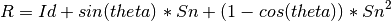
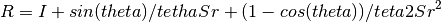

Tools to play with affine matrices.
-
pypreclin.utils.affine.matrix44_to_vec12(affine)[source]¶ Decompose a 4x4 matrix describing a homogenous affine transform into a 12-sized vector composed of the translations, rotations, zooms, shears.
Decomposing a matrix into simple transformations* by Spencer W. Thomas, pp 320-323 in Graphics Gems II, James Arvo (editor), Academic Press, 1991, ISBN: 0120644819.
Parameters: affine: array (4, 4)
the input affine matrix.
Returns: vec12: array (12, )
the 12-sized vector of natural affine parameters.
-
pypreclin.utils.affine.rotation_mat2vec(rotation)[source]¶ Rotation vector from rotation matrix.
Parameters: rotation: array (3, 3)
rotation matrix.
Returns: vec: array (3, )
rotation vector, where norm of vec is the angle theta, and the axis of rotation is given by vec / theta.
-
pypreclin.utils.affine.rotation_vec2mat(r)[source]¶ The rotation matrix is given by the Rodrigues formula:

with:
where n = r / ||r||
In case the angle ||r|| is very small, the above formula may lead to numerical instabilities. We instead use a Taylor expansion around theta=0:

leading to:

To avoid numerical instabilities, an upper threshold is applied to the angle. It is chosen to be a multiple of 2*pi, hence the resulting rotation is then the identity matrix. This strategy warrants that the output matrix is a continuous function of the input vector.
Parameters: vec: array (3, )
rotation vector, where norm of vec is the angle theta, and the axis of rotation is given by vec / theta.
Returns: rotation: array (3, 3)
rotation matrix.